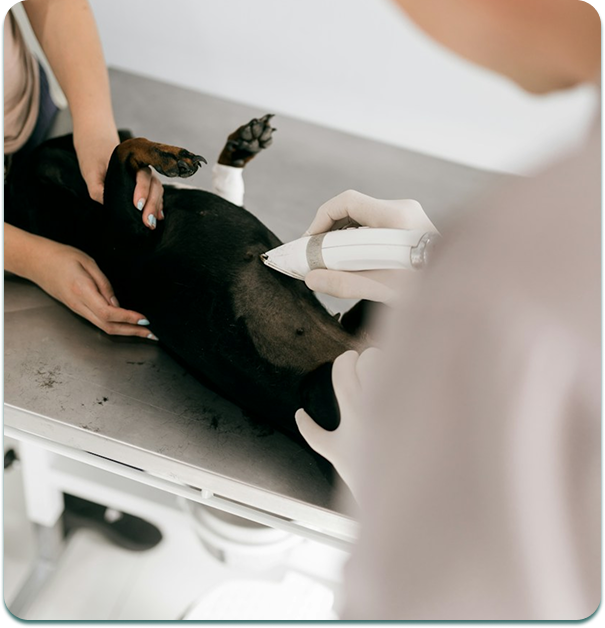

Exame
Voltar
Os exames são essenciais para prevenir e diagnosticar doenças e manter a saúde do seu pet. Na Clínica Veterinária Apaixonados, oferecemos diversos tipos de exames, laboratoriais e de imagem, de acordo com as necessidades de cada paciente e a orientação do nosso médico veterinário.
- Exames laboratoriais;
- Exames de sangue;
- Exames de urina;
- Exames de fezes;
